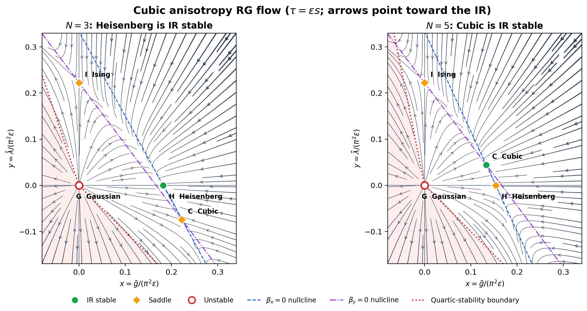

These prompts paraphrase David Tong's Statistical Field Theory ,
Example Sheet 3 (November 2018). Problem numbers, starred status, equations,
and guidance follow the
official sheet .
1 Sheet 3, Problem 1: Critical Exponents of the $O(N)$ Model For $N$ real scalars in $d=4-\epsilon$, take
\[F_1[\phi]=\int d^dx\left[
\frac12(\nabla\phi)^2
+\frac{\mu^2}{2}(\phi\cdot\phi)
+g(\phi\cdot\phi)^2\right].\tag{1.1}\]
The supplied flows for $\tilde g=\Lambda^{-\epsilon}g$ are
\[\frac{d\mu^2}{ds}=2\mu^2+
\frac{N+2}{2\pi^2}\frac{\Lambda^4}{\Lambda^2+\mu^2}\tilde g,
\qquad
\frac{d\tilde g}{ds}=\epsilon\tilde g-
\frac{N+8}{2\pi^2}
\frac{\Lambda^4}{(\Lambda^2+\mu^2)^2}\tilde g^{2}.\tag{1.2}\]
Find $\nu$ at the Wilson--Fisher fixed point. Assuming
$\eta=O(\epsilon^2)$, determine $\alpha,\beta,\gamma,\delta$ to
leading order in $\epsilon$.
To first order in $\epsilon$, the Wilson-Fisher fixed point is given by
\[\mu_*^2 = -\frac12\frac{N+2}{N+8}\epsilon \Lambda^2, \quad \tilde g_* = \frac{2\pi^2}{N+8}\epsilon.\tag{1.3}\]
Let us consider the RG flow near the W-F fixed point, which is
\[\frac{d}{ds}\begin{pmatrix}
\delta\mu^2 \\ \delta \tilde g
\end{pmatrix} = \begin{pmatrix}
2-\frac{N+2}{N+8}\epsilon & \frac{N+2}{2\pi^2}\left(1+\frac{1}{2}\frac{N+2}{N+8}\epsilon\right)\Lambda^2\\
0 & -\epsilon
\end{pmatrix}\begin{pmatrix}
\delta \mu^2 \\ \delta \tilde g
\end{pmatrix},\tag{1.4}\]
which has eigenvalues $\lambda_1 = 2-\frac{N+2}{N+8}\epsilon$ and $\lambda_2 = -\epsilon$. Since $\delta\mu^2 \sim t$, the first eigenvalue is precisely $\Delta_t =\lambda_1$. Then, by
\[\xi \to \zeta^{-1}\xi \sim\zeta^{-1}t^{-\nu}, \quad t \to \zeta^{\Delta_t}t,\tag{1.5}\]
we find
\[\nu = \frac{1}{\Delta_t} = \frac{1}{2} + \frac{1}{4}\frac{N+2}{N+8}\epsilon + \mathcal{O}(\epsilon^2).\tag{1.6}\]
From this, we can evaluate the remaining critical exponents.
\[c \sim \frac{\partial^2 f}{\partial t^2},\tag{1.7}\]
while $F = \int d^d f$, and hence $[f(t)] = -d$. Therefore, $f \sim \xi^{-d} \sim t^{\nu d}$, which implies $c\sim t^{\nu d -2}$, namely
\[\alpha = 2-\nu d = \frac{4-N}{2(N+8)}\epsilon + \mathcal{O}(\epsilon^2).\tag{1.8}\]
Then, consider
\[\phi \sim \xi^{-\Delta_\phi} \sim t^{\nu \Delta_\phi} \implies \beta = \nu \Delta_\phi =
\frac12-\frac{3}{2(N+8)}\epsilon
+O(\epsilon^2),\tag{1.9}\]
where we have used the fact that $\eta = \mathcal{O}(\epsilon^2)$.
By the term $\int d^dx B\phi$, we now that $\Delta_\phi + \Delta_B = d$, and
\[\chi = \frac{\partial \phi}{\partial B} \sim \xi^{-\Delta_\phi + \Delta_B}\sim t^{\nu(\Delta_\phi -\Delta_B)},\tag{1.10}\]
which implies
\[\gamma = -\nu(\Delta_\phi -\Delta_B) = -\nu(2\Delta_\phi-d) =
1+\frac{N+2}{2(N+8)}\epsilon
+O(\epsilon^2)
.\tag{1.11}\]
Finally,
\[\phi \sim \xi^{-\Delta_\phi} \sim B^{\Delta_\phi/\Delta_B} \implies \delta = \frac{\Delta_B}{\Delta_\phi} = 3+\epsilon+O(\epsilon^2).\tag{1.12}\]
2 Sheet 3, Problem 2: Flow Between Gaussian and Wilson--Fisher Fixed Points Along the flow of Problem 1, $\mu^2=O(\epsilon)$. At leading order,
write
\[\frac{d\tilde g}{ds}
\simeq\epsilon\tilde g-\frac{N+8}{2\pi^2}\tilde g^{2}
=-A\tilde g(\tilde g-g_\star).\tag{2.1}\]
Determine $A,g_\star$, then solve the flow from $g_0$ at $s=0$
to obtain
\[\tilde g(s)=\frac{g_\star}
{1-(1-g_\star/g_0)e^{-\epsilon s}}.\tag{2.2}\]
Clearly,
\[A = \frac{N+8}{2\pi^2}, \quad g_\star = \frac{2\pi^2}{N+8}\epsilon.\tag{2.3}\]
Then,
\[\int_{g_0}^{\tilde g}\frac{dg}{g(g-g_\star)} = -A\int^s_0ds' \implies \log\frac{1-g_\star /\tilde g}{1 -g_\star /g_0} = -Ag_\star s \implies \tilde g(s)=\frac{g_\star}
{1-(1-g_\star/g_0)e^{-\epsilon s}}.\tag{2.4}\]
3 Sheet 3, Problem 3*: Cubic Anisotropy and Fixed-Point Stability Add an $O(N)$-breaking interaction to Problem 1:
\[F_2[\phi]=F_1[\phi]
+\int d^dx\,\lambda\sum_{a=1}^N\phi_a^4.\tag{3.1}\]
Establish the necessary positive definite condition $g+\lambda>0$.
For $\tilde g=\Lambda^{-\epsilon}g$ and
$\tilde\lambda=\Lambda^{-\epsilon}\lambda$, use the given flows
\[\frac{d\tilde g}{ds}=\epsilon\tilde g
-\frac{N+8}{2\pi^2}\tilde g^{2}
-\frac3{\pi^2}\tilde g\tilde\lambda,
\qquad
\frac{d\tilde\lambda}{ds}=\epsilon\tilde\lambda
-\frac6{\pi^2}\tilde g\tilde\lambda
-\frac9{2\pi^2}\tilde\lambda^{2}.\tag{3.2}\]
Find the Gaussian, Heisenberg ($\tilde\lambda=0$), Ising
($\tilde g=0$), and cubic ($\tilde g\tilde\lambda\ne0$)
fixed points. Check the cubic point against the positive definite condition.
Determine the stability of every point in the $(g,\lambda)$ plane,
and plot the RG trajectories separately for $N<4$ and $N>4$.
Hint: The determinant and trace determine the eigenvalue signs
of a $2\times2$ stability matrix.
For the free energy to be stable, we require the quartic part to be positive definite. Therefore, we must have
\[g \left(\sum_{a=1}^N\phi_a^2\right)^2 + \lambda\sum_{a=1}^N\phi_a^4 > 0\tag{3.3}\]
for all nonzero field configurations. Taking only one component to be nonzero implies $g+\lambda>0$.
By solving
\[\tilde g \left(\epsilon
-\frac{N+8}{2\pi^2}\tilde g
-\frac3{\pi^2}\tilde\lambda\right)=0,\tag{3.4}\]
\[\tilde \lambda\left(\epsilon
-\frac6{\pi^2}\tilde g
-\frac9{2\pi^2}\tilde\lambda\right) = 0,\tag{3.5}\]
we find four fixed points:
\[\mathrm{Gaussian:}\quad\tilde \lambda = 0, \tilde g = 0,\tag{3.6}\]
\[\mathrm{Heisenberg:}\quad \tilde \lambda = 0 ,\tilde g = \frac{2\pi^2}{N+8}\epsilon,\tag{3.7}\]
\[\mathrm{Ising:}\quad \tilde \lambda = \frac{2\pi^2}{9}\epsilon ,\tilde g = 0,\tag{3.8}\]
and
\[\mathrm{Cubic:}\quad \tilde \lambda = \frac{2\pi^2(N-4)}{9N}\epsilon ,\tilde g = \frac{2\pi^2}{3N}\epsilon.\tag{3.9}\]
The cubic point satisfies this necessary condition for $N>1$, since
$\tilde g+\tilde\lambda=2\pi^2(N-1)\epsilon/(9N)>0$.
At GF, we have
\[\frac{d}{ds}\begin{pmatrix}
\delta \tilde g \\ \delta \tilde \lambda
\end{pmatrix} = \begin{pmatrix}
\epsilon & 0 \\0 & \epsilon
\end{pmatrix}\begin{pmatrix}
\delta \tilde g \\ \delta \tilde \lambda
\end{pmatrix},\tag{3.10}\]
so GF is unstable in both directions.
At IF, we have
\[\frac{d}{ds}\begin{pmatrix}
\delta \tilde g \\ \delta \tilde \lambda
\end{pmatrix} = \begin{pmatrix}
\epsilon/3 & 0 \\-4\epsilon/3 & -\epsilon
\end{pmatrix}\begin{pmatrix}
\delta \tilde g \\ \delta \tilde \lambda
\end{pmatrix},\tag{3.11}\]
so it is unstable in the $(1,-1)$ direction and stable along the $\tilde\lambda$ axis.
At HF, we have
\[\frac{d}{ds}\begin{pmatrix}
\delta \tilde g \\ \delta \tilde \lambda
\end{pmatrix} = \begin{pmatrix}
-\epsilon & -6\epsilon/(N+8) \\0 & (N-4)\epsilon/(N+8)
\end{pmatrix}\begin{pmatrix}
\delta \tilde g \\ \delta \tilde \lambda
\end{pmatrix}.\tag{3.12}\]
The eigenvalues are $-\epsilon$ and $(N-4)\epsilon/(N+8)$. Thus HF is stable for $N<4$ and unstable in one direction for $N>4$. Finally, at CF, we have
\[\frac{d}{ds}\begin{pmatrix}
\delta \tilde g \\ \delta \tilde \lambda
\end{pmatrix} = \begin{pmatrix}
-(N+8)\epsilon/3N & -2\epsilon/N \\-4(N-4)\epsilon/3N & -(N-4)\epsilon/N
\end{pmatrix}\begin{pmatrix}
\delta \tilde g \\ \delta \tilde \lambda
\end{pmatrix}.\tag{3.13}\]
The matrix has eigenvectors and eigenvalues
\[\lambda_1=-\epsilon,\qquad
v_1=
\begin{pmatrix}3\\N-4\end{pmatrix}\tag{3.14}\]
\[\lambda_2=-\frac{N-4}{3N}\epsilon,\qquad
v_2=
\begin{pmatrix}-1\\2\end{pmatrix}.\tag{3.15}\]
Therefore, for $N>4$, CF is stable in all directions, while for $1<N<4$ it becomes unstable in the $v_2$ direction. At $N=4$, HF and CF coincide and one eigenvalue vanishes.
From these we can draw the RG diagrams.

4 Sheet 3, Problem 4*: The Sine--Gordon Perturbation In two dimensions with ultraviolet cutoff $\Lambda$, consider
\[F[\phi]=\int d^2x\left[
\frac12(\nabla\phi)^2-\lambda_0\cos(\beta_0\phi)\right].\tag{4.1}\]
Determine the engineering dimensions of $\beta_0$ and $\lambda_0$.
Split $\phi_\mathbf{k}=\phi_\mathbf{k}^-+\phi_\mathbf{k}^+$, with the plus modes supported on
$\Lambda/\zeta<|k|<\Lambda$, and define their position-space fields.
Integrate out the plus modes to first order in $\lambda_0$ to derive
\[F'[\phi^-]=\int d^2x\left[
\frac12(\nabla\phi^-)^2
-\lambda_0\left\langle
\cos\bigl(\beta_0(\phi^-+\phi^+)\bigr)
\right\rangle_+\right].\tag{4.2}\]
Define $\langle\cdot\rangle_+$ and evaluate it, showing that the
cosine coefficient becomes $\lambda_0\zeta^{-\beta_0^2/(4\pi)}$.
Hence find the relevance threshold $\beta_0^2=8\pi$.
Hint: Expand the cosine into exponentials and use Wick's
identity from Sheet 2, Problem 8, together with
\[\langle\phi^+(x)\phi^+(y)\rangle_+
=\int_{\Lambda/\zeta<|k|<\Lambda}
\frac{d^2k}{(2\pi)^2}\frac{e^{-ik\cdot(x-y)}}{k^2}\tag{4.3}\]
in the coincident-point limit.
Naively, the engineering dimensions are $[\phi] = 0$, $[\beta_0] = 0$, and $[\lambda_0 ] = -2$. Splitting into $\phi_\mathbf{k} = \phi_\mathbf{k}^+ + \phi_\mathbf{k}^-$, the partition function becomes
\[\int_{k <\Lambda}\mathcal{D}\phi e^{-F[\phi]} = \int_{k <\Lambda/\zeta}\mathcal{D}\phi^- \int_{\Lambda/\zeta< k <\Lambda}\mathcal{D}\phi^+ e^{-F[\phi]} =\int_{k <\Lambda/\zeta}\mathcal{D}\phi^- e^{-F'[\phi^-]},\tag{4.4}\]
where
\[e^{-F'[\phi^-]} = e^{-F_0[\phi^-]}\int_{\Lambda/\zeta< k <\Lambda}\mathcal{D}\phi^+ e^{-F_0[\phi^+]}\left(1 + \lambda_0\cos(\beta_0(\phi^-+\phi^+)) + \mathcal{O}(\lambda_0^2)\right).\tag{4.5}\]
Therefore, we find
\[\begin{aligned}
F'[\phi^-]&= \int d^2x\left[
\frac12(\nabla\phi^-)^2 - \log \left(1 + \lambda_0\left\langle
\cos\bigl(\beta_0(\phi^-+\phi^+)\bigr)
\right\rangle_+ + \mathcal{O}(\lambda_0^2)\right)\right]\\&= \int d^2x\left[
\frac12(\nabla\phi^-)^2
-\lambda_0\left\langle
\cos\bigl(\beta_0(\phi^-+\phi^+)\bigr)
\right\rangle_+ + \mathcal{O}(\lambda_0^2)\right].
\end{aligned}\tag{4.6}\]
The correlation function can be written as
\[\left\langle
\cos\bigl(\beta_0(\phi^-+\phi^+)\bigr)
\right\rangle_+ = \frac{1}{2}\left[\left\langle
e^{i\beta_0\phi^+}\right\rangle_+e^{i\beta_0\phi^-} + \left\langle
e^{-i\beta_0\phi^+}\right\rangle_+e^{-i\beta_0\phi^-}\right].\tag{4.7}\]
Using the Wick identity, we find
\[\left\langle
e^{i\beta_0\phi^+}\right\rangle_+ = \left\langle
e^{-i\beta_0\phi^+}\right\rangle_+ = \exp\left(-\frac{1}{2}\beta_0^2\left\langle
\phi^+(0)\phi^+(0)\right\rangle_+\right) =\exp\left(-\frac{1}{4\pi}\beta_0^2
\log\zeta \right).\tag{4.8}\]
Plugging back into the free energy, we find
\[F'[\phi^-] = \int d^2x\left[\frac{1}{2}(\nabla\phi^-)^2 - \lambda_0\zeta^{-\beta_0^2/4\pi}\cos(\beta_0\phi^-)\right].\tag{4.9}\]
Rescaling the UV cutoff back to $\Lambda$, namely $\mathbf{k}' = \zeta\mathbf{k}$ and $\mathbf{x}' = \mathbf{x}/\zeta$, we find
\[\lambda(\zeta) = \zeta^{-\beta_0^2/4\pi +2}\lambda_0.\tag{4.10}\]
Therefore, the potential it relevant when $\beta_0^2 < 8\pi$ and irrelevant when $\beta_0^2 > 8\pi$.
5 Sheet 3, Problem 5: Renormalisation of a Fluctuating Membrane For a two-dimensional membrane in three-dimensional space, use
\[F[h]=\int d^2x\left[
\frac{r_0}{2}(\nabla h)^2
+\frac{\lambda_0}{2}
\bigl(1+(\nabla h)^2\bigr)^{-5/2}(\nabla^2h)^2\right].\tag{5.1}\]
Expand it through quartic order as
\[F[h]\simeq\int d^2x\left[
\frac{r_0}{2}(\nabla h)^2
+\frac{\lambda_0}{2}(\nabla^2h)^2
-\frac{5\lambda_0}{4}(\nabla h)^2(\nabla^2h)^2
+\cdots\right].\tag{5.2}\]
Find the engineering dimensions of $h,r_0,\lambda_0$.
Separate $F=F_0+F_I$ into quadratic and quartic pieces and split
$h_k=h_k^-+h_k^+$ with $\Lambda/\zeta<|k|<\Lambda$ for $h_k^+$.
Derive the Gaussian fast-mode covariance
\[\langle h_{k_1}^+h_{k_2}^+\rangle_+
=\frac{(2\pi)^2\delta(k_1+k_2)}
{r_0k_1^2+\lambda_0k_1^4}.\tag{5.3}\]
Fourier transform $F_I$, isolate the term that renormalises
$(\nabla^2h)^2$ while ignoring field renormalisation, and derive
$d\lambda/ds\simeq-5/(4\pi)$ for $\zeta=e^s$.
Does short-distance fluctuation make the membrane more or less
flexible in the infrared?
The engineering dimensions are $[h] = 1$, $[r_0] = -2$, and $[\lambda_0] = 0$. We read off $F_0[h_\mathbf{k}^+]$, which is
\[F_0[h_\mathbf{k}^+] = \int \frac{d^2k}{(2\pi)^2}\left(\frac{r_0}{2}k^2 + \frac{\lambda_0}{2}k^4\right)h_\mathbf{k}^+ h_{-\mathbf{k}}^+.\tag{5.4}\]
This immediately gives
\[\langle h_{k_1}^+h_{k_2}^+\rangle_+
=\frac{(2\pi)^2\delta(k_1+k_2)}
{r_0k_1^2+\lambda_0k_1^4}.\tag{5.5}\]
The interaction free energy is
\[F_I[h_\mathbf{k}] = \frac{5\lambda_0}{4}\int\prod_{i=1}^4\frac{d^2k_i}{(2\pi)^2}\mathbf{k}_1 \cdot \mathbf{k}_2 k_3^2 k_4^2h_{\mathbf{k}_1}h_{\mathbf{k}_2}h_{\mathbf{k}_3}h_{\mathbf{k}_4}(2\pi)^2\delta^2\left(\sum_i\mathbf{k}_i\right).\tag{5.6}\]
We shall focus only on the lowest order here.
Using
\[F'[h_\mathbf{k}^-] = F_0[h_\mathbf{k}^-] + \langle F_I[h_\mathbf{k}^+, h^-_\mathbf{k}]\rangle_+ + \cdots,\tag{5.7}\]
the only contributing term in $\langle F_I\rangle$ at this order is
\[\frac{5\lambda_0}{4}\int\prod_{i=1}^4\frac{d^2k_i}{(2\pi)^2}\mathbf{k}_1 \cdot \mathbf{k}_2 k_3^2 k_4^2\langle h_{\mathbf{k}_1}^+h_{\mathbf{k}_2}^+\rangle_+h_{\mathbf{k}_3}^-h_{\mathbf{k}_4}^-(2\pi)^2\delta^2\left(\sum_i\mathbf{k}_i\right).\tag{5.8}\]
Note that there is no polynomial factors here. This gives
\[-\frac{5\lambda_0}{4}\int\frac{d^2k}{(2\pi)^2}\frac{d^2q}{(2\pi)^2} k^4\frac{1}{r_0 + \lambda_0 q^2}h_{\mathbf{k}}^-h_{-\mathbf{k}}^-.\tag{5.9}\]
Since $\lambda_0$ has engineering dimension zero, and the canonical term remains unchanged, we find
\[\lambda(\zeta) = \lambda_0 - 2\cdot \frac{5\lambda_0}{4(2\pi)}\int^\Lambda_{\Lambda/\zeta}dq \frac{q}{r_0 + \lambda_0q^2} + \cdots .\tag{5.10}\]
Recall
\[\frac{d}{ds}\int^\Lambda_{\Lambda e^{-s}}dq f(q) = \Lambda f(\Lambda),\tag{5.11}\]
which gives
\[\frac{d\lambda}{ds} = -\frac{5\lambda_0}{4\pi}\frac{\Lambda^2}{r_0 + \lambda_0 \Lambda^2} + \cdots \approx -\frac{5}{4\pi},\tag{5.12}\]
where we have assumed $\Lambda^2 \gg r_0/\lambda_0$. Therefore, by integrating out the short distance behaviour, $\lambda_0$, which measures the stiffness of the membrane, becomes smaller. That is, short-distance fluctuation makes the membrane more flexible in the IR.
6 Sheet 3, Problem 6: Integrating Out Two Coupled Order Parameters Consider fields $\phi_1,\phi_2$ with independent sign flips and
\[F[\phi_1,\phi_2]=\int d^dx\left[
\sum_{i=1}^2\left(
\frac12(\nabla\phi_i)^2+\frac{\mu_i^2}{2}\phi_i^2
+g_i\phi_i^4\right)+\lambda\phi_1^2\phi_2^2\right].\tag{6.1}\]
Set $\mu_i^2=0$ and integrate out short-wavelength modes in
$d=4-\epsilon$. Show, for a common constant $I$, that
\[\frac{dg_i}{ds}=\epsilon g_i-(36g_i^2+\lambda^2)I,
\qquad
\frac{d\lambda}{ds}
=\epsilon\lambda-(8\lambda^2+12\lambda g_1
+12\lambda g_2)I.\tag{6.2}\]
Find the fixed points and show that the stable one has enhanced
$O(2)$ symmetry.
Recall
\[F'[\phi_i^-] = F[\phi_i^-] + \langle F_I\rangle_+ - \frac{1}{2}[\langle F_I^2\rangle_+ - \langle F_I\rangle_+^2] + \cdots.\tag{6.3}\]
We shall keep $\mu_i^2 = 0$ through out the calculation, and hence neglect the running of it as well. $\langle F_I\rangle_+$ has no contributing terms to the running of $\lambda, g_i$. The leading order contribution comes from $ \frac{1}{2}[\langle F_I^2\rangle_+ - \langle F_I\rangle_+^2]$. The bubble diagrams give coefficients $36g_1^2+\lambda^2$ for $\delta g_1$, $36g_2^2+\lambda^2$ for $\delta g_2$, and $12\lambda g_1+12\lambda g_2+8\lambda^2$ for $\delta\lambda$. The original bubble drawings are in the downloadable PDF. The factor of $36$, for example, comes from $\begin{pmatrix}
4\\2
\end{pmatrix}^2$. All of these diagrams involves the integral
\[f(\mathbf{k}_1+\mathbf{k}_2) = \int^\Lambda_{\Lambda/\zeta} \frac{d^dk}{(2\pi)^d}\frac{1}{k^2(\mathbf{k} + \mathbf{k}_1 +\mathbf{k}_2)^2} =\int^\Lambda_{\Lambda/\zeta} \frac{d^dk}{(2\pi)^d} \frac{1}{k^4}(1 + \mathcal{O}(\mathbf{k}_1,\mathbf{k}_2)),\tag{6.4}\]
where we can ignore terms including external momenta, since these generate terms of the form $(\phi^-)^2 \nabla^2(\phi^-)^2$. These are irrelevant terms which we are not interested in. Since the couplings has engineering dimensions $[g_i] = [\lambda] = -\epsilon$, by rescaling we find
\[g_i(\zeta) = \zeta^{\epsilon}[g_i - (36g_i^2 + \lambda^2)f(0)] + \cdots,\tag{6.5}\]
\[\lambda(\zeta) = \zeta^\epsilon[\lambda - (12\lambda g_1 + 12\lambda g_2 + 8\lambda^2)f(0)] + \cdots.\tag{6.6}\]
Using
\[\frac{df(0)}{ds} = \frac{\Omega_{d-1}}{(2\pi)^d}\Lambda^{d-4} = \frac{\Lambda^{-\epsilon}}{8\pi^2}.\tag{6.7}\]
Introducing the dimensionless couplings $\tilde g_i = \Lambda^{-\epsilon} g_i$ and $\tilde \lambda = \Lambda^{-\epsilon}\lambda$ and differentiating with respect to $s$, we find
\[\frac{dg_i}{ds}=\epsilon g_i-\frac{1}{8\pi^2}(36g_i^2+\lambda^2),
\qquad
\frac{d\lambda}{ds}
=\epsilon\lambda-\frac{1}{8\pi^2}(8\lambda^2+12\lambda g_1
+12\lambda g_2),\tag{6.8}\]
where we have suppressed the tilde.
Let's find the fixed points of the theory by solving
\[\begin{aligned}0 &= \epsilon g_1-\frac{1}{8\pi^2}(36g_1^2+\lambda^2),\\
0 &= \epsilon g_2-\frac{1}{8\pi^2}(36g_2^2+\lambda^2),\\
0 &= \lambda\left(\epsilon-\frac{1}{8\pi^2}
(8\lambda+12g_1+12g_2)\right).\end{aligned}\tag{6.9}\]
Clearly, it has a trivial Gaussian fixed point $\lambda=g_i=0$.
For $\lambda=0$, we have
\[g_i=0
\qquad \mathrm{or} \qquad
g_i=\frac{2\pi^2}{9}\epsilon,\tag{6.10}\]
giving the three additional fixed points
\[(g_1,g_2,\lambda)
=
\left(\frac{2\pi^2}{9}\epsilon,0,0\right),
\quad
\left(0,\frac{2\pi^2}{9}\epsilon,0\right),
\quad
\left(\frac{2\pi^2}{9}\epsilon,
\frac{2\pi^2}{9}\epsilon,0\right).\tag{6.11}\]
For $\lambda\neq0$, combining the first two equations gives
\[(g_1-g_2)\left[
\epsilon-\frac{9}{2\pi^2}(g_1+g_2)
\right]=0.\tag{6.12}\]
The nontrivial solutions have $g_1=g_2=g$. The third equation then gives
\[\lambda=\pi^2\epsilon-3g.\tag{6.13}\]
Substituting this into the first equation gives
\[45g^2-14\pi^2\epsilon g+\pi^4\epsilon^2=0,\tag{6.14}\]
and hence
\[g_1=g_2=\frac{\pi^2}{5}\epsilon,
\qquad
\lambda=\frac{2\pi^2}{5}\epsilon,\tag{6.15}\]
or
\[g_1=g_2=\frac{\pi^2}{9}\epsilon,
\qquad
\lambda=\frac{2\pi^2}{3}\epsilon.\tag{6.16}\]
Expanding about
\[\lambda=\lambda_*+\delta\lambda,
\qquad
g_i=g_{i*}+\delta g_i,\]
the linearised flow is
\[\frac{d}{ds}
\begin{pmatrix}
\delta\lambda\\
\delta g_1\\
\delta g_2
\end{pmatrix}
=
M
\begin{pmatrix}
\delta\lambda\\
\delta g_1\\
\delta g_2
\end{pmatrix}.\tag{6.17}\]
The stability matrix is
\[M=
\begin{pmatrix}
\displaystyle
\epsilon-\frac{4\lambda_*+3g_{1*}+3g_{2*}}{2\pi^2}
&
\displaystyle-\frac{3\lambda_*}{2\pi^2}
&
\displaystyle-\frac{3\lambda_*}{2\pi^2}
\\[6pt]
\displaystyle-\frac{\lambda_*}{4\pi^2}
&
\displaystyle\epsilon-\frac{9g_{1*}}{\pi^2}
&
0
\\[6pt]
\displaystyle-\frac{\lambda_*}{4\pi^2}
&
0
&
\displaystyle\epsilon-\frac{9g_{2*}}{\pi^2}
\end{pmatrix}.\]
At the Gaussian fixed point,
\[M_{\mathrm{G}}=\epsilon
\begin{pmatrix}
1&0&0\\
0&1&0\\
0&0&1
\end{pmatrix},\tag{6.18}\]
so all three eigenvalues are positive. Hence the Gaussian fixed point is unstable in all directions.
For the fixed point
\[(g_{1*},g_{2*},\lambda_*)
=
\left(\frac{2\pi^2}{9}\epsilon,0,0\right),\tag{6.19}\]
we find
\[M=\epsilon
\begin{pmatrix}
\frac23&0&0\\
0&-1&0\\
0&0&1
\end{pmatrix}.\tag{6.20}\]
The eigenvalues and corresponding eigenvectors are
\[\begin{aligned}\omega_1=\frac23\epsilon,\quad
v_1&=
\begin{pmatrix}1\\0\\0\end{pmatrix},
\\
\omega_2=-\epsilon,\quad
v_2&=
\begin{pmatrix}0\\1\\0\end{pmatrix},
\\
\omega_3=\epsilon,\quad
v_3&=
\begin{pmatrix}0\\0\\1\end{pmatrix}.\end{aligned}\tag{6.21}\]
Thus this fixed point has one stable and two unstable directions. The fixed point
\[(g_{1*},g_{2*},\lambda_*)
=
\left(0,\frac{2\pi^2}{9}\epsilon,0\right)\tag{6.22}\]
is equivalent under $g_1\leftrightarrow g_2$ and has the same stability properties.
For the decoupled fixed point
\[(g_{1*},g_{2*},\lambda_*)
=
\left(
\frac{2\pi^2}{9}\epsilon,
\frac{2\pi^2}{9}\epsilon,
0
\right),\tag{6.23}\]
we obtain
\[M_{\mathrm{dec}}
=
\epsilon
\begin{pmatrix}
\frac13&0&0\\
0&-1&0\\
0&0&-1
\end{pmatrix}.\tag{6.24}\]
Hence
\[\omega_1=\frac13\epsilon,
\qquad
\omega_2=\omega_3=-\epsilon,\tag{6.25}\]
with eigenvectors along the $\lambda$, $g_1$, and $g_2$ directions respectively. Therefore, this fixed point is stable in the $g_1$ and $g_2$ directions but unstable to switching on $\lambda$.
For
\[g_{1*}=g_{2*}=\frac{\pi^2}{9}\epsilon,
\qquad
\lambda_*=\frac{2\pi^2}{3}\epsilon,\tag{6.26}\]
we find
\[M
=
\epsilon
\begin{pmatrix}
-\frac23&-1&-1\\
-\frac16&0&0\\
-\frac16&0&0
\end{pmatrix}.\tag{6.27}\]
Its eigenvalues are
\[\omega_1=-\epsilon,
\qquad
\omega_2=0,
\qquad
\omega_3=\frac13\epsilon,\tag{6.28}\]
with corresponding eigenvectors
\[v_1=
\begin{pmatrix}6\\1\\1\end{pmatrix},
\qquad
v_2=
\begin{pmatrix}0\\-1\\1\end{pmatrix},
\qquad
v_3=
\begin{pmatrix}-2\\1\\1\end{pmatrix}.\tag{6.29}\]
This fixed point therefore has a stable direction, an unstable direction, and a marginal direction at this order, and is not IR stable.
Finally, consider
\[g_{1*}=g_{2*}=\frac{\pi^2}{5}\epsilon,
\qquad
\lambda_*=\frac{2\pi^2}{5}\epsilon.\tag{6.30}\]
The stability matrix is
\[M_{O(2)}
=
\epsilon
\begin{pmatrix}
-\frac25&-\frac35&-\frac35\\
-\frac1{10}&-\frac45&0\\
-\frac1{10}&0&-\frac45
\end{pmatrix}.\tag{6.31}\]
Its eigenvalues are
\[\omega_1=-\epsilon,
\qquad
\omega_2=-\frac45\epsilon,
\qquad
\omega_3=-\frac15\epsilon\tag{6.32}\]
with corresponding eigenvectors
\[v_1=
\begin{pmatrix}2\\1\\1\end{pmatrix},
\qquad
v_2=
\begin{pmatrix}0\\-1\\1\end{pmatrix},
\qquad
v_3=
\begin{pmatrix}-6\\1\\1\end{pmatrix}.\tag{6.33}\]
Since all three eigenvalues are negative, this fixed point is IR stable.
Moreover, at this fixed point $\lambda_*=2g_*$, so the quartic interaction becomes
\[g_*(\phi_1^4+\phi_2^4)
+\lambda_*\phi_1^2\phi_2^2
=
g_*(\phi_1^2+\phi_2^2)^2.\tag{6.34}\]
Thus the stable fixed point has an enhanced $O(2)$ symmetry, as required.